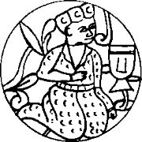

986 yılında yaptığımız bu büyük kengeşin üstünden iki koca yıl daha geçti. Eski hamam eski tas demeyeceğim, bu süre içinde Cend’deki durumumuz hem olgunlaştı hem de mayalandı. Her mayalanan gibi biraz ekşidi. Müslüman acunun bozkıra açılan kapısı demek olan Cend’de, yaşlı bir Köktürk önderliğindeki bir bölük Aktürk Musevisinin durumu, komşu devletlerin ilgisini çekmeye başlamıştı. Doğru, gelip Salur Kazan’a duvar olup durmuştuk ama Kazan’ın ordusunda sanki er kalmamış, teker teker bize taşınmıştı. Yoksa buzdan bir duvar mıydık biz? Su katılaşır buz olur, buzlar erir sel olur. Bir buz duvar kendine daha ne kadar engel olabilirdi? Cend’in sıcak ufukları acaba neye gebeydi? Nereye boşalacaktı biriktirdiğimiz sel? Yoksa bu Aktürklerin, bu Hazarların, İslam acununu ele geçirmek için yaptığı bir oyun, bir danışıklı dövüş müydü bu? Uzak yakın bütün Müslüman komşularımız bunu öğrenmek istiyordu.
Böyle düşündüler. Elçiler gönderdiler. Samanilerden, Gaznelilerden, Karahanlılardan elçiler geldi. Casusların, çaşıtların zaten bini bir paraydı. Hatta Abbasi Halifesi Et-Ta’i’nin kervancı kılığına girmiş bir casusunu yakalayıp getirdiler. Irak’ın soğuk yerde iki günde nezle olacak tüysüz hecinlerine sabun ve cam eşya yüklemiş, güya Urus’a alışverişe gidiyordu yoksul!
Müslümanların Müslüman olmayan komşuları da bizimle ilgileniyordu. Samaniler ve Yabgu Oğuzları arasına sıkışmış, her ikisine de vergi veren tozlu bir sınır kentinden başka bir şey olmayan Cend, sanki acunun orta yeri olmuştu. Dillerde o kadar “hadi Urum’a gidelim!” sözü varken Urum’un bizimle ilgilenmemesi olası değildi. Urum Kağan’ın, Bulgarkıran II. Basil’in elçisi Kırım’a gitmiş, Kırım’dan Sarkel’in yıkıntılarına uğramış, dediğine göre Bozkır Urumculuğunun sona erdiğinin kanıtı olan yıkıntılar içinde duygulanmış, çok ağlamış, sora sora gelmiş, bizi bulmuştu. Tekparmakhos olan adına bakılırsa Türk olma olasılığı yüksek olan, biraz Bulgar ağzı ile Türkçe konuşan, ağzı çok laf yapan biriydi elçi. Belki Hıristiyanlığa geçeriz diye yanında birkaç metropolit ile bir eski patrik de getirmişti. Yaşlı patriğin bizlere “Aman bunlar nasıl Yahudi? Hiç mi Yahudi görmedik? Nerede bizim Romanyotlarımız, nerede bunlar? Ayol bunlar Gog ile Magog! Hepsi Gehenna kaçkını!” der gibi baktığı dikkatimizden kaçmadı. Haliyle, eğlendik.
Selcük Hatun ile yan yana, aynı tahtın üzerine oturmuş olduğumuz halde karşıladık Tekparmakhos’u. Armağanlarını getirip önümüze bıraktı. Adamları bunları tek tek açarak gösteriyordu. Musa Yalvaç’ın asasından bir parça, Calut’un çarığı dedikleri, bir kulaç boyunda bir eski çarık, Süleyman Yalvaç’ın albızları çağırmak için kullandığı tunç düdük, Belkıs Ece’nin koyu gök renkli, badem biçimindeki yüzüğü! Ezekiel’in içi gümüşle kaplı kafatası... Bu sonuncusu bir bozkır çocuğu için pek tanıdıktı, Elime alıp sağına soluna baktım. Gümüşle kaplı içine bizim Orlıon yazısıyla “Ürküt süngök bağraç” yazılmıştı. Pek anlamadım ama, “Ürküt’ün kemik bakracı” gibi bir şey olabilirdi. Görünüşe göre Urum, elinde bizim için önemli ne kadar kutsal kalıntı varsa tutmamış, göndermişti. Her gelen, dinimiz için çok kutlu bir şeydi. Bu niye olmasın? Güldüm. Sonra daha pahalıca nesneler; kılıçlar, altın bir taç, tombul Basil ve ortağı Konstantin’in fildişi bir levhaya oyulmuş resimleri ve eski püskü bir kadın kaftanı. Biraz takılayım dedim:
“Tekparmakhos Ağa, Apa Urum bu sıralar epey kötülemiş gibi duruyor. Nedir bu kaftanın durumu böyle?”
Çakallarbaşı bu anı bekliyormuş. Gözlerini derin bir saygıyla kapadı. Ellerini göğsünde bitiştirerek:
“Kağan! Bu Hazar’dan Urum’a gelin giden ve eski imparatorlardan Leon’un anası olan Çiçek Hatun’un kaftanıdır. Ondan sonra her imparatoriçe saygı gereği bu kaftanı giydiğinden, biraz eskidi tabii. Şimdi iki imparatoriçemizden, iki hatunumuzdan hangisinin giyeceği bilinemediği için, hazinedeydi. Yeri burasıdır dedik, getirdik.”
Selcük, adamcağızın kalbinin kırılmasını önlemek için,
“Aaa ne hoş!” diyerek ellerini çırptı. Cend pazarından alınmış, elden düşme İran işi bir kaftana benziyordu daha çok. Henüz Müslümanlığa geçmediğimiz için “lahavle” çekemedim. Elçi, bu al ver faslından sonra, baklayı dilinin altından çıkardı. Ahi gitmiş vahi kalmış da olsa, Karası gitmiş yalnız Akı kalmış da olsa, Urum biz Hazarlar ile anlaşmak, eski bağlaşmayı şöyle bir körükleyip canlandırmak istiyordu.
Ne yapacaktık? Birine mi saldıracaktık? A, yok canım öyle şey olur mu? İmparatorlar, Hıristiyan olmamız koşulu ile bizi ülkelerine çağırıyorlardı. Rahatımız için her şey düşünülmüştü. Hatta, ne rastlantı, kendi aralarında “İkinci İsrail” dedikleri bir bölgeyi daha şimdiden bizim için hazırlamışlardı. Anadolu’nun en güzel, en verimli, en sulak bölgeleri bizi bekliyordu. Biraz daha soruşturunca bu bölgenin Abbasi Halifeliği ile sınır olduğu anlaşıldı. Tabii, tabii, başka yerleri varmış Urum’un ama, iklim açısından birincisine benziyor bu bölge, rahat olur ne de olsa diye düşünmüşlermiş! Hemen o anda mı Hıristiyan olurmuşuz, Anadolu’ya gitmeyi bekler miymişiz?
Bu solucanlar Sarkel düşerken parmaklarını bile kıpırdatmamışlardı. Urus Koca bütün bozkırı tutar sanıyorlardı. Şimdi utanmadan antlaşma, bağlaşma sözü ediyorlardı. Konuştum:
“Sizi mi kıracağız! Biz de zaten o amaçla buralara kadar geldik!”
Anlamamış, yüzüme bakıyordu.
“O amaçla mı buralara geldiniz? Uzaklaşa uzaklaşa bir hal olmuşsunuz Kağan! Utanmasanız Çin’e gidecekmişsiniz!”
“İlk bakışta öyle görünüyor ama değil. Belki yolumuzu biraz uzattık, İran üzerinden geleceğiz, ama hiç kaygılanmayın geleceğiz! Söz verdik mi yaparız!”
Bütünüyle aptallaştı.
“İran mı?”
“Tabii İran ya! Biraz da o uygarlığı öğrenelim, İran okulundan çıkıp öyle gelelim diyoruz. Taş duvarlı, üç katlı, geniş bahçeli yahşi okulmuş diyorlar!”
“Ama Kağan!”
“Aması maması yok. Tamam, önerinizi beğendik. Geliyoruz! Urum kağanı kardeşlerime selam söyle. Buradan istedikleri bir şey var mı?”
Yoksulun dünyası karardı. Elimle “çık” işareti yaptım. Biraz ağırdan alınca iki korçu bunu koltukladı, çeke sürüte dışarı çıkardılar. Kısa konçtu çizmesinin teki ayağından çıktı. Arkasından attırdım. Otağın önünden çığlıkları duyuluyordu:
“Ama Kağan! Ben şimdi Urum Kağan’a ne derim? Biz sizi Karadeniz kuzeyindeki bozkır tarafından bekliyorduk! Iran taş ağır, dazlak yer diyorlar, sürülerinize ne yedireceksiniz?”
Bunları hiç duymadım bile. Kağan’ın önünde sözünü söylememişse bir elçi, duymak zorunda mıydım? Takke düşmüş, kel görünmüştü. Bunların niyeti, bizim Dede’nin “bozkır dengesi” gibi bir şey olan düzeneklerini yeniden işletmekti. Peçeneklerle mi kapışmışlar, Uruslar ile mi bozuşmuşlar, ne olmuşsa artık, yine ocağımıza düşmüşlerdi. Orada bulunanlara ve benimkilere açıkladım:
Şimdi, Tanrı için uyanıktılar da. Ülkelerinde yer gösteriyorlardı. Bir hedef koyuyorlardı bize. Kulakları delikti. Urum’a gitme işini duymamaları olası değildi. Dolayısıyla biz bu çağrı üzerine Cennet Cend’den kalkacaktık, yeniden bozkırı geçecektik, “Aktürkler geliyor” diye şöyle bir dalgalanacaktı ortalık. Kiev’in hizmetine girdiğini duyduğumuz ve kendilerine Chemei Klobuki (Kara Kalpaklılar) dendiğini öğrendiğimizde yıkıldığımız kardeşlerimiz bizim geldiğimizi duyunca belki ayaklanacaklar, belki daha batıya göç edeceklerdi. Bu durumda Urum’un düşmanı olan Tuna Bulgarlarının çekinmemesi olası değildi. Başka olası bir şey de, biz geliyoruz diye Peçeneklerin yerlerinden yurtlarından olmasıydı. Ya da bunların hepsi Uruslar ile el ele verecek, bizi korkunç bir Kırıma uğratmak için savaşacaklar, budun yitecek, ölecek, kemikleri dağ gibi yığılacaktı ama yağısı da güçsüzleştiği için, bu işten yine Urum kazançlı çıkacaktı. Urum havaya bir ok atıyor, düşerken bir kurdu yaralayacağını umuyordu. Biz de ya havaya atılan oktuk ya da boğazı kesik Azman’dık. Kurtları başımıza toplayacaktık. Az iş değildi şu Urum bozkırcılığı!
Yok, biz tüm engelleri yara yara Urum’a ulaşırsak, kırık dökük durumumuza bakmadan bizi Abbasi Halifeliği sınırlarına bekçi yapacaklardı. Yok öyle yağma Apa Urum! Nerede o yoğurdun bolluğu, nerede? Bunları düşünemeyip de kestirmeden Urum’a ulaşmak için yollara düşen tüm göçebe kardeşlerime, bozkırın tüm çocuklarına içim acıdı.
Bu Urum yorumlarımı bitirdiğim zaman, Selcük ve bütün ailemin gözlerinde hayranlık ve umut pırıltılan vardı. Bu Urum’a gitme işine, İran üzerinden de olsa görünürde sahip çıkmam, hepsinin gönülcüğünde umut ışıkları yakmıştı. Son zamanlarda sapkın düşünceleriyle doğru dinden uzaklaşma isteği gösteren, ne zamandır koca bir halka buzdan gövdesiyle set çeken inatçı koca ve babaları Tengere Tardu Kağan’da büyük düzelmeler görülüyordu!
Tekparmakhos’u savdığımızın haftasıydı ki, Çin’de Liao adıyla bir hanedan kuran benim eski dost Kitanlardan, Erkin Tarkınç Tamgacı adlı bir elçi geldi. İleri görüşlü Kağan Sheng Tsung selam gönderiyor, şimdilik orada dirlikleri pek iyiyse de günlerin neler getireceğinin bilinmediğini, olur da Çin uyanıp bunları silkelerse Batı Bozkırı taraflarında bir arkadaşları olmasını dilediğini söylüyordu. Bizden istediği, biraz daha doğuya ilerleyip Tangutları ve Kansu Uygurlarını huzursuz eden Karahanlı Kartuklara saldırmamızdı. Bu iş için seçtiği elçi, gerçekten dört dörtlüktü. Elçi içeri girip yollu yolunca yer öptükten sonra gözlerini gözlerime dikmiş, “Biliyor musun Kağan ben de...” diye başlamışken, araya girip sözünü ben bitirmiştim:
“Köktürküm!”
Doğruydu, şimdiye dek bir kez bile yanılmamıştım! Ulan amma çoktu bu Köktürkler? Hangi taşı kaldırsan altında vıcır vıcır Köktürk kaynıyordu! “Bittik, tükendik biz!” diye yas tutup kaygılandığıma yanarım! Elçi, taa 742 yılında devletimizi yıkanlar arasında yer alan Karluklara veryansın ediyor, dakika bile sektirmeden hemen şu anda, Karahanlılar olarak bilinen Karluklara saldırmamızı öğütlüyordu. Oyun olsun diye şöyle dedim: “Tamgacı! Arsılan urugundanım ama, size söylemedikleri anlaşılıyor, büyük büyük dedelerim Karluk buduna şad olarak atanıp onların arasında yaşadıktan için bunların hakkında diğer Köktürklerden biraz değişik düşünürüz!”
Yoksulun elinin ayağının karışması görülecek şeydi. Adama yazık olduğunu düşünen Selcük, hemen elçiyi avutmaya girişti. Hep tuhaf zevkleri oldu bu kızın! Çin’in ötesinde, büyük denizde başka bir ülke var mıymış?
Samanileri, Gaznelileri ve Karahanlıları ise anlatmaya gerek bile yok. Din adına, Müslümanlık adına konuştuklarında hepsi de kötü üflüyor, mangalda kül bırakmıyorlar ama birbirlerinin gözlerini oymaya can atıyorlardı. İstiyorlardı ki Aktürkler dalkılıç olup bunların yağısı kimse ona dalsın. Ayrı ayrı hepsine olumlu, ılımlı sözler verdim. Bu sözlerimizi tuttuğumuzda kendilerine neler olacağını da otursun onlar düşünsün. İlk aşamada, içlerinde en güçsüzleri olan Samanileri desteklemeye karar verdim. Ailem yine hastalığımın depreştiğini düşündü. Bıkmadan açıkladım: Güçlüyü desteklersek, adam o kadar güçlenirdi ki ilerde önünde duran olmazdı. O da ilk iş olarak bizim gibi ayakta durmaya, yaşamaya çalışan bir bölüğe yükleniverirdi. Güçsüzü desteklersek, güçlüyü biraz güçsüzleştirirsek daha akıllıca olurdu. Sonra o desteklediğimiz güçsüzün yerine geçmek işten bile olmazdı. Varsın yıkılacak dama direk olalım. O direk biz olduktan sonra çekip almaz mıyız kendimizi? Dede’den bir şeyler kapmıştım değil mi? Hepsi alkışladılar. Devam ettim:
“Böyle dışardan dünyanın odağı Cend’e gelen elçilik kurulları ile uğraşır, yüksek düzeyde siyaset yaparken... Ne var Mikail?”
“Şu siyaset dediğin nedir Han Baba?”
Durdum. Aylardır kullanıyordum bu sözcüğü, hiçbiri kıyışıp soramamıştı. Anlaşılan sonunda dayanamamışlar, en küçüklerine sorduruyorlardı. Açıkladım:
“Anlaşılan, bu anlamını bilmediğiniz sözcüğün dilime nereden yapışıp kaldığını merak ediyorsunuz. Taciklerin kullandığı bir söz. Cend’in yerli bilginlerinden öğrendim. Arapça imiş aslı. At bakımı, yönetimi anlamına geliyormuş! ‘Seyislik’ diye bildiğimiz, aslı yine Tacik dilinden gelen söz gibi yani. Bize pek uyacak, çok yakışacak, bütünüyle göçebe bir ruhu yansıtıyor. At yerine kişioğlunu koyun! Öğrendim, kullanıyorum. Neyse, yaşlı Tengere’nizi hoş görün! Nerede kalmıştık? Hah... işte böyle yüksek düzeyde siyaset yaparken biz de boş durmuyoruz, Müslümanlığı tanımaya çalışıyoruz. Değil mi Yaşıl Kır?”
Güya Güney Çalışma Bölügü’nün başkanı olan ve bizi aydınlatması gereken yaşlı Başrav ayağa kalktı. Boru sesiyle öttü. Yağmadı ama, esti gürledi:
“Asla, ölürüz de doğru dinden ayrılmayız! Onların dinini tanıyan onlardan olur. Onların dilini konuşan, onlardan söz alan da onlardandır. Olamaz! Ne olacak Taciklerin dinini dilini öğrenip de!”
Böyle demesi Kağan olarak kanıma dokundu. Kendisi de epeydir sinirime dokunuyordu. Bu adamın bu kısır görüşleri, bu anlayışsız tutumu ne olacaktı? Bütün budunun aklını çeliyor, yapmak istediklerimin önüne duvar olup duruyor, bağnazlığın sesi olup konuşuyordu. Yok, yarından tezi yok bunu başravlıktan dehleyecek, içinde Salur’un anasına sövdüğüm bir biliyi eline tutuşturarak Kazana elçi olarak gönderecektim!
Baskın basanındır demişler. Ben daha biliyi yazdıramadan, hemen ertesi gün, Yaşıl Kırın börkünü kaldırıp atıp, başına Tacik işi koca bir sarık sarınıp katıma öyle gelmesi, herkesin elleriyle gözlerini oğuşturmasına neden oldu. “Hazret,” şimdi kendine böyle dedirtiyordu çömezlerine, Müslüman olmuştu!
Dün gece bu konuşmayı yaptıktan sonra görüş değiştirmiş, birden doğru yolu ve doğru dini bulmuş, görmüştü. Hepimiz eşekten düşmüş karpuza döndük, dağıldık kaldık! Kızım Hulda Eze kuşkucu, akıllı kızdı. Hepimizin adına o sordu:
“Yaşıl Dede, nasıl olur da bir gün içinde kişioğlu bu kadar değişir?”
Başrav’ın bu işe iyice hazırlandığı açıktı:
“Yavrum, dileğim bundan sonra Allah zülcelâl hazretlerinin kulları arasında Es–Seyid eş–Şeyh Ahzar–ül Turabi es–Sarkeli olarak bilinip tanınmak! Ama eski adımı yüzüme vuracaksanız da bir diyeceğim olmaz. Değil mi ki ben yıllarca sapkınlığın karanlık sokaklarında döndüm dolaştım? Hem okudum hem de yazdım. Karailigin başı oldum. Kişioğullarını bu sapkın yola çağırdım, bu da kefaretim olsun! Şimdi kızım, bütün ihtidalar, bütün dönüşler böyle ani olur çocuğum! Başkası olmaz. Tanrı, yolunu şaşırmış eşekler gibi dolaşanların arasından bazı kullarını seçer, aniden gözlerinin önündeki perdeyi kaldırır. Sen söyle kızım, kimin yalvaç olduğunu anlaması üç yıl sürmüş? Sen söyle yavrum, kimin veli olduğunu anlaması beş yıl sürmüş?”
“?”
Sonra Sayın Sarkelf bana döndü. Derin bir kendini bırakmışlıkla, acıklı bir sesle konuştu:
“Şimdi sen ey kanlı Kağan, istersen yaşlı, buruşuk, ince boynumu vurdur. Dinimiz yolunda şehadet çağı gelmişse hazırız, Eşhedü en lâ...”
Gülmemek için kendimi güç tutarak:
“Dur, dur abi, şey yani Ahzar-ul Turabi, 'Müslüman olun’ diye yıllardır kendimi yırtıyorum, sem niye öldüreyim canım? Aksine seni Cend’deki tüm Müslümanların kadısı yaptım” dedim. Doksanlık kocanın gözleri parladı: “Ya Başravlık?”
“Eh, Tora’mızı senden iyi bilen yok. O da üstünde kalsın. Köktürk, Aktürk, Yahudi gelirse halakaya göre, Müslüman gelirse de şey...”
“Şeriata!”
“Evet şeriata göre yargını verirsin! Sonra diğerleri de doğru yola gelince başravlığı kaldırırız olur biter!”